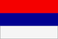

|
Länderinformationen Serbien
1. Das Wichtigste auf einen Blick2. Sehens- und Hörenswertes
3. Politik & Gesellschaft
4. Schmeckenswertes
5. Medien
6. Reisetipps
1. Wissenswertes
|  | Hier
haben wir die wichtigsten Zahlen und Fakten zu Serbien
und der serbischen Sprache zusammengetragen. |
 Die
serbische Sprache
Die
serbische Sprache
Serbisch ist aus dem Altslawischen entstanden, dessen Sprachen nach ihrer geographischen Lage unterschieden werden. Zur Gruppe der ostslawischen Sprachen zählen Russisch und Ukrainisch, zum Westslawischen gehören Tschechisch, Slowakisch, Polnisch und Sorbisch. Serbisch gehört neben Kroatisch, Bosnisch, Mazedonisch, Slowenisch und Bulgarisch zu den südslawischen Sprachen. Die slawischen Sprachen sind eine Untergruppe der indogermanischen Sprachen. Da das Serbische sich zusammen mit dem Kroatischen und dem Bosnischen entwickelt hat, weisen diese drei Sprache große grammatische Ähnlichkeiten auf. Ein Kroate kann deshalb einen Serben in aller Regel recht gut verstehen. Unterschiede sind jedoch vor allem im Vokabular zu finden sowie in der unterschiedlichen Schriftart: Kroaten und Bosnier schreiben in lateinischer Schrift, in Serbien aber ist Kyrillisch immer noch die die offizielle Schriftart, nur selten kommt es im Alltag zur Benutzung der lateinischen Buchstaben. Für das Erlernen der Sprache und das Lesen von Texten ist es also wichtig, dass Sie Kyrillisch beherrschen. Zudem müssen Sie sich im Serbischen auf spezielle Zeichen – zur Kennzeichnung von weichen und harten Konsonanten – einstellen, die in anderen kyrillischen Schriften nicht existieren.
Um Ihnen das Erlernen und Lesen der Schrift zu erleichtern, haben wir für Sie in einer Tabelle das serbische Alphabet in kyrillischer und lateinischer Schrift zusammengestellt.
Das
serbische Alphabet in kyrillischer und lateinischer Schrift |
|||
А
а |
A
a |
Н
н |
N
n |
Б
б |
B
b |
Њ
њ |
Nj
nj |
В
в |
V
v wie deutsches W |
О
о |
O
o |
Г
г |
G
g |
П
п |
P
p |
Д
д |
D
d |
Р
р |
R
r |
Ђ
ђ |
Đ
đ |
С
с |
S
s |
Е
е |
E
e |
Т
т |
T
t |
Ж
ж |
J
j wie in Journalist,
Jazz |
Ћ
ћ |
Ć
ć wie „chen“ in Brötchen |
З
з |
S
s |
У
у |
U
u |
И
и |
I
i |
Ф
ф |
F
f |
Ј
ј |
Ј
ј,
oft wie unbetontes i |
Х
х |
H
h |
К
к |
K
k |
Ц
ц |
C
c wie deutsches „z“ |
Л
л |
L
l |
Ч
ч |
Č
č wie „tsch“ in Rutsche |
Љ
љ |
Lj
lj |
Џ
џ |
D¸
d¸ |
М
м |
M
m |
Ш
ш |
Sch
sch |
Die serbische Sprache wird nach aktuellen Schätzungen von circa zwölf Millionen Menschen weltweit gesprochen, der Großteil davon lebt in Serbien, wo Serbisch die offizielle Amtssprache ist. In Montenegro wird ebenfalls Serbisch gesprochen, auch wenn seit Oktober 2007 die dort verwendete Variante der Sprache offiziell als montenegrinische Sprache bezeichnet wird. Auch im serbisch verwalteten Teil Bosnien-Herzegowinas besitzt Serbisch amtlichen Status. Größere serbischsprachige Minderheiten gibt es zudem in den Vereinigten Staaten und in Westeuropa. Vielleicht kennen Sie ja auch Menschen in Ihrer Nachbarschaft, Ihrem Betrieb oder in Ihrem Freundeskreis, die Serbisch als Muttersprache sprechen und mit denen Sie das in diesem Kurs Erlernte einem ersten praktischen Test unterziehen können.
Nun aber zum Land Serbien: Sie finden hierzu im folgenden Abschnitt interessante Fakten und landestypische Informationen.
 Einwohner
Einwohner
Insgesamt gibt es etwa 9,5 Millionen Serben auf der ganzen Welt. Etwa 6,2 Millionen davon leben in Serbien selbst, rund 1,7 Millionen Serben sind in Bosnien und Herzegowina zu finden, rund 200.000 in Kroatien und der Rest in Montenegro, Makedonien und Slowenien sowie in westlichen Ländern. Die heutige Republik Serbien (Србија/ Srbija) ist am 05.06.2006 – nach dem Zerfall Jugoslawiens 2003 sowie der Trennung der Staatenunion Serbien und Montenegro – entstanden. Laut einer Volkszählung aus dem Jahr 2002 besitzt Serbien ungefähr 7,5 Millionen Einwohner, von denen fast 500.000 Flüchtlinge aus den früheren Kriegsgebieten Kroatien, Bosnien-Herzegowina und dem Kosovo sind. Unter anderem. deshalb setzt sich der serbische Staat, neben 83 Prozent Serben, aus 21 ethnischen Minderheiten zusammen. Die größte Gruppe stellen dabei die Ungarn (3,9 Prozent), gefolgt von etwa zwei Prozent Bosniaken (bzw. „ethnischen Muslimen“), 1,4 Prozent Roma und etwas über ein Prozent „Jugoslawen“. Unter einem Prozent liegt die Anwesenheit von Montenegrinern, Kroaten, Slowaken, Albanern, Vlahen, Rumänen, Mazedoniern, Bulgaren, Bunjevazen und Ukrainern. Neben weiteren ethnischen Minderheiten leben in Serbien ca. 4.000 Deutsche.
Durch die ethnische Vielfalt werden in Serbien verschiedene Religionen ausgeübt. 85 Prozent der Bevölkerung ist serbisch-orthodox orientiert, sechs Prozent sind Angehörige der römisch-katholische Kirche, drei Prozent sind Muslime und sechs Prozent gehören sonstigen Religionsgruppen an. Neben Serbisch wird in der nördlichen Provinz Wojwodina auch Ungarisch, Kroatisch, Russisch, Slowakisch und Rumänisch als Amtssprache anerkannt.
Die Bevölkerungszahl Serbiens ist seit 1991 um jährlich 0,2 Prozent rückläufig. Die Lebenserwartung der serbischen Bevölkerung liegt bei etwa 74 Jahren und damit rund vier Jahre unter dem durchschnittlichen deutschen Sterbealter. Dafür weicht die Alphabetisierungsrate vom mitteleuropäischen Standard ab: Können in Serbien rund acht Prozent der Menschen nicht lesen und schreiben, so lebt in der Schweiz nur ein Prozent Analphabeten. Die Hauptstadt Serbiens ist Belgrad (mit etwa zwei Millionen Einwohnern).
 Fläche
Fläche
Der Binnenstaat Serbien liegt im Balkan zwischen 41°52' und 46°11' nördlichem Längen-, sowie 18°06' und 23°01' östlichem Breitengrad und ist 77.484 km² groß, wozu die Provinz Wojwodina beinahe ein Viertel beisteuert (zum Vergleich: Deutschland ist viermal so groß wie Serbien). Das Land besitzt durch seine zentrale Lage mehrere Nachbarn: Im Norden grenzt Serbien an Ungarn, im Osten an Rumänien und Bulgarien, im Süden an Mazedonien, den Kosovo und Albanien, im Südwesten an Montenegro und im Westen an Bosnien-Herzegowina und Kroatien. Der Kosovo, der von Serbien – genauso wie etwa die Wojwodina – bis heute als autonome Provinz betrachtet wird, erklärte am 17.02.2008 seine Autonomie. Obwohl der Kosovo daraufhin von den Vereinten Nationen, und u.a. auch Deutschland, als eigenständiger Staat anerkannt wurde, protestierte Serbien gegen diesen Schritt und zählt den Kosovo immer noch zum eigenen Staatsgebiet. Alle in den Texten genannten Texte und Zahlen beziehen sich dennoch auf ein Serbien ohne die kosovarische Provinz.
Im Norden des Landes herrscht die fruchtbare Pannonische Tiefebene vor, die durch ihre weite und kaum bewaldete Ebene zu 80 Prozent landwirtschaftlich genutzt werden kann. Mit der Provinz Wojwodina und den dort gelegenen Landschaften Batschka, Sirmien und West-Banat, besitzt Serbien einen Teil des Ungarischen Tieflands, in dem sich vereinzelt Hügel- und Bergländer (beispielsweise Fruška Gora) befinden. Das Landesinnere Serbiens wird von Hügellandschaften und Mittelgebirge geprägt und zeichnet sich durch große Waldgebiete aus. Bevor der Kosovo seine Unabhängigkeit erklärte, stellte der im Osten des Landes stehende Berg Djeravica mit 2656m die höchste Erhebung Serbiens dar; mit der kosovarischen Loslösung ist nun der so genannte Gusam-Berg die höchste serbische Erhebung (2.539m). Viele Flüsse suchen ihren Weg durch Serbien, mit 588 km ist die Donau der längste von ihnen.
 Währung
Währung
In Serbien wird offiziell mit dem Dinar bezahlt, wobei sich ein Dinar in 100 Para unterteilt. Mit dem Euro können weder Serben noch Ausländer bezahlen (im Gegensatz dazu ist im Kosovo der Euro die Hauptwährung), Zahlungen in ausländischer Währung sind nicht zulässig. Da sich der Wechselkurs permanent ändert, können wir Ihnen an dieser Stelle nicht den aktuellen Kurs nennen. Dieser lässt sich jedoch im Internet mit wenig Aufwand recherchieren: Geben Sie dazu einfach in eine beliebige Suchmaschine die Begriffe „Währungsrechner“ und „Serbische Dinar“ ein.
 Ökonomische
Situation
Ökonomische
Situation
Infolge der Verwicklung des Landes in jugoslawische Bürgerkriege sowie durch internationale Sanktionen, NATO-Luftschläge (1999) und andauernde politischer Instabilität schrumpfte die Wirtschaftsleistung des Landes bis 2000 auf weniger als die Hälfte der Leistung des Jahres 1989; die Arbeitslosigkeit stieg auf 30 Prozent. Strukturelle Reformen blieben während der 1990er-Jahre im Wesentlichen aus, die Währung war Mitte der 1990er-Jahre von einer Hyperinflation betroffen.. Die politische Neuorientierung nach Ablösung des damaligen jugoslawischen Präsidenten Slobodan Milošević im Jahr 2000 ebnete den Weg für ordnungspolitische und wirtschaftliche Reformen, die insgesamt jedoch nur zögerlich umgesetzt werden. Serbien, insbesondere der Kosovo und die vom NATO-Bombardement betroffenen Gebiete, wurden nach 1999 zu Hauptzielen von internationalen Unterstützungsleistungen im Rahmen des Stabilitätspakts für Südosteuropa. Das Wachstum des Bruttoinlandsprodukts wuchs im neuen Jahrtausend deutlich an, das Bruttoinlandsprodukt je Einwohner erreichte 2003 sogar einen Betrag von rund 2.200 US-Dollar. Der Umfang der ausländischen Direktinvestitionen ist aufgrund der anhaltenden politischen und ökonomischen Unsicherheiten allerdings noch gering, die Auslandsverschuldung hingegen hoch (im Jahre 2002 belief sie sich auf 11,8 Milliarden US-Dollar). Auch die Arbeitslosigkeit bewegte sich 2003 mit 26 % auf einem hohen Niveau, ist aktuell allerdings auf etwa 19 Prozent gefallen..
Nach der Milošević-Ära war die serbische Ökonomie – verglichen mit ihrem Stand im Jahre 1990 – um die Hälfte geschrumpft. Seit dem Sturz Miloševićs aus dem Amt des Regierungschefs hat die demokratische Folge-Regierung versucht – auch mit Hilfe des Auslands – die wirtschaftliche Situation wieder zu stabilisieren. So wurden Serbien einige ausländische Kredite zur Restrukturierung der heimischen Wirtschaft bewilligt. Obwohl die ökonomische Stabilität des Landes gewährleistet ist, hat die serbische Wirtschaft bislang nur geringe Fortschritte gemacht; vor allem die hohe Arbeitslosenquote und die stetig steigende Inflationsrate sind ein großes Problem. Das monatliche Nettoeinkommen eines serbischen Arbeiters liegt im Durchschnitt bei etwa 350 Euro, insgesamt leben 6,5 Prozent der serbischen Bevölkerung unterhalb der Armutsgrenze.
70 Prozent der Landesfläche Serbiens können zu landwirtschaftlichen Zwecken genutzt werden. Zusammen mit dem äußerst günstigen Klima ergibt sich so eine besonders gute Ausgangsposition für Getreide- und Gemüseanbau, Weinproduktion und Viehzucht. Rund 30 Prozent der serbischen Bevölkerung ist deshalb in der Landwirtschaft (einschließlich Lebensmittelverarbeitung) tätig, die damit zum wichtigsten Wirtschaftszweig Serbiens zählt. Fast ein Viertel der serbischen Arbeitskräfte entfallen auf den Dienstleistungssektor. Knapp die Hälfte der Serben arbeitet in der Industrie und im Bergbau. Die wichtigsten Industriezweige stellen dabei der Steinkohlebergbau, die industrielle Bearbeitung, die Herstellung elektronischer Ware sowie die Produktion und Verteilung von Ölprodukten und Wasser dar. Insgesamt hat die einst gut ausgebaute serbische Industrie den Anschluss an den Westen verpasst, was sich vor allem in veralteten Geräten widerspiegelt. Um den Industriezweig wieder rentabler zu gestalten, ist deshalb ein Import von ausländischen Geräten, Wissen und Kapital unabdingbar.
Deutschland ist nach Russland der wichtigste Handelspartner Serbiens. Die serbischen Hauptexporte sind Eisen und Stahl, Nichteisenmetalle, Lebensmittel, Vieh, Maschinen und Textilien. Die Einfuhr bestimmen hauptsächlich Öl, Fahrzeuge, Gas sowie Industrie- und Elektrogeräte. 2007 exportierte Deutschland Güter im Wert von etwa 2,2 US-Dollar nach Serbien, Tendenz steigend.
Wenn Sie sich weiter für die ökonomische Situation Serbiens interessieren oder sogar über geschäftliche Investitionen nachdenken, besuchen Sie doch die Internetseite der „Serbia Investment and Export Promotion Agency“ (SIEPA): http://www.siepa.sr.gov.yu/site/en/home/
 Zeitzone
Zeitzone
Da Serbien in der Mitteleuropäischen Zeitzone liegt, stimmt die Uhrzeit mit der von Deutschland, Österreich und der Schweiz überein. Wenn Sie am Sonntag in München um 20.15 Uhr den Tatort anschauen möchten, können Sie dies also zur gleichen Zeit ebenso in Belgrad tun. Auch die Umstellung von Sommer- auf Winterzeit (und umgekehrt) geschieht zeitgleich mit Deutschland am jeweils letzten Sonntag im März und Oktober.
Im nächsten Kapitel haben wir einige ausgesuchte Reiseempfehlungen für Sie zusammengestellt.